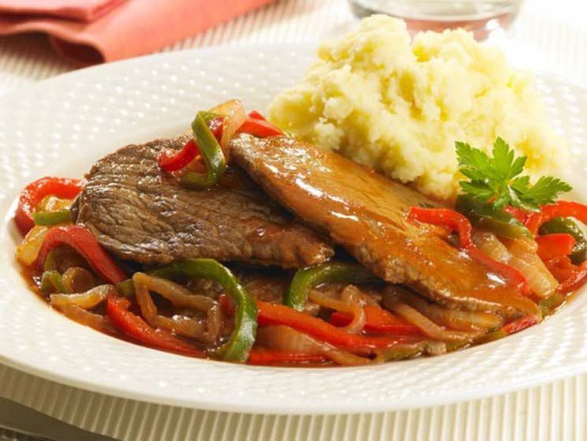

Esta receta es típica de el interior de Buenos Aires como lo es el bife nuestro de cada día es un imperativo de la cocina argentina que acompañó a la cocina criolla varias décadas
En una cacerola caliente con aceite cocine los bifes intercalándolos con las rodajas de tomate, condimente con sal y pimienta y
agregue el morrón junto con la cebolla, cocine unos minutos y añada las papas,
corrija nuevamente con sal y pimienta y agregue el pimentón, ajo picado, nuevamente bifes, rodajas
de tomate, morrón, papas, cebolla, sal, pimienta , pimentón, proceda del mismo modo hasta terminar de colocar todos los ingredientes,
luego tape la olla con un papillote y cocine a fuego suave sin revolver durante 30 minutos. A mitad de cocción agregue los huevos crudos,
condimente con sal y pimienta y espolvoree con perejil picado.
